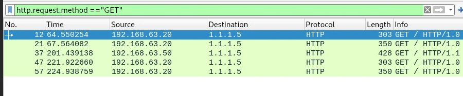
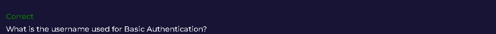
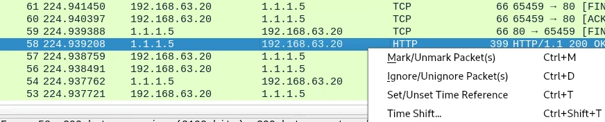
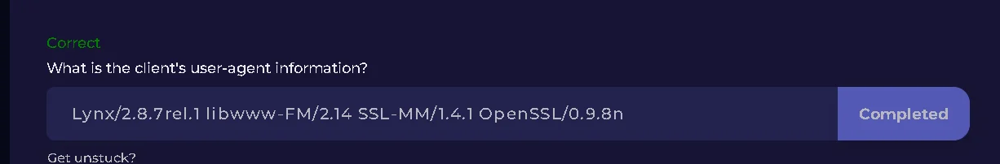
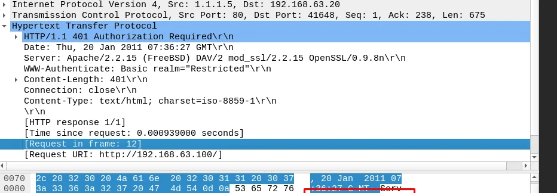

HTTP Basic Authentication: análise do PCAP
- Categoria
- Desafios
- Caso
- PCAP-01
- Registro
- Análise de tráfego
Resumo
Exercício de leitura de uma captura de tráfego HTTP no Wireshark.
Passo a passo da investigação
Resolução do desafio: HTTP Basic Authentication
Analisei o arquivo PCAP no Wireshark. Abaixo estão as respostas, com o método utilizado e as evidências organizadas por assunto.
1. Contagem de requisições HTTP GET
Pergunta: How many HTTP GET requests are in pcap?
Apliquei o filtro http.request.method == "GET" no
Wireshark. O filtro exibiu cinco requisições HTTP GET. Resposta:
5 requisições.

2. Credenciais de Basic Authentication
O cabeçalho Authorization: Basic contém informações
codificadas em Base64. Base64 não é criptografia; sem TLS, as
credenciais podem ser expostas numa captura de rede.

3. User-Agent do cliente
Pergunta: What is the client’s user-agent
information? Para examinar a conversa, selecionei o pacote no Wireshark
e usei Follow → HTTP Stream. O campo
User-Agent da requisição identifica o cliente como:
Resposta:
Lynx/2.8.7rel.1 libwww-FM/2.14 SSL-MM/1.4.1 OpenSSL/0.9.8n**


4. Identificação do servidor
As informações abaixo aparecem no cabeçalho Server da
resposta HTTP. A versão do OpenSSL é a anunciada pelo servidor; o valor
OpenSSL/0.9.8n que também aparece no
User-Agent pertence à identificação do cliente.
Pergunta: What is the version of OpenSSL running on the
server? Resposta: OpenSSL
0.9.8n.
Pergunta: What is the name and version of the web
server software? Resposta: Apache 2.2.15**
(FreeBSD).** O cabeçalho completo informa
Apache/2.2.15 (FreeBSD) DAV/2 mod_ssl/2.2.15 OpenSSL/0.9.8n.
Pergunta: What is the server operating system?
Resposta: FreeBSD, indicado pelo identificador
(FreeBSD) no cabeçalho Server.

Exercício simulado. Algumas capturas foram recortadas ou tiveram campos ocultados.